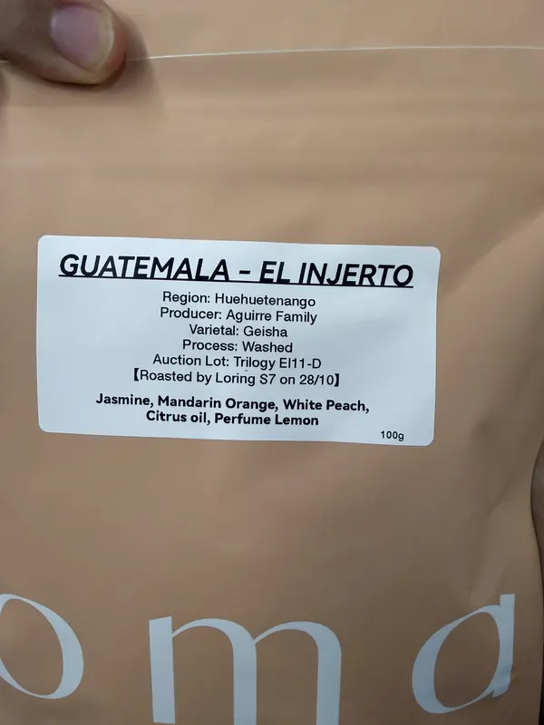豆单 01100 g危地马拉 El Injerto 茵赫特 Trilogy EI11-D水洗茉莉花 · 柑橘 · 白桃 · 柑橘油豆子详情产地危地马拉 / Huehuetenango品种Geisha烘焙日2026-10-28标签风味茉莉花、柑橘、白桃、柑橘油、香水柠檬照片 1
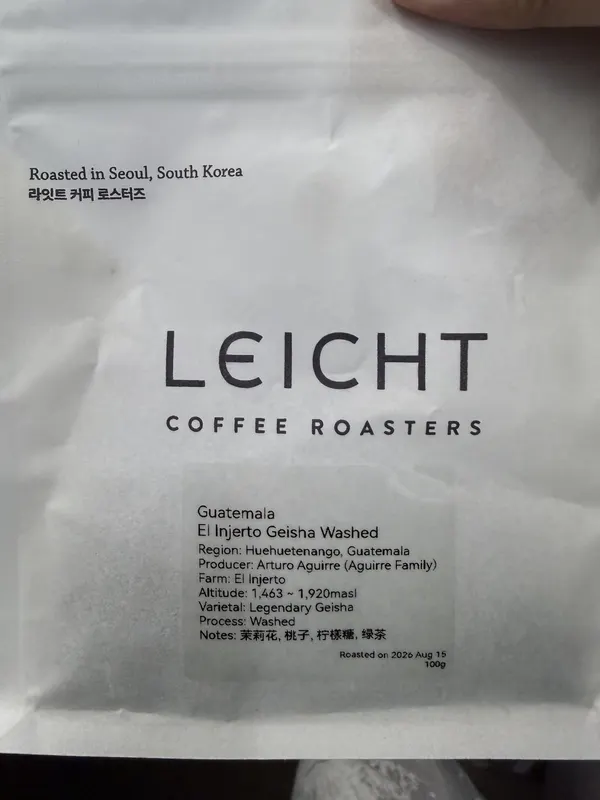豆单 0270 g危地马拉茵赫特水洗瑰夏LEICHT · 水洗茉莉花 · 桃子 · 柠檬糖 · 绿茶豆子详情产地危地马拉 / Huehuetenango品种Legendary Geisha烘焙日2026-08-15标签风味茉莉花、桃子、柠檬糖、绿茶照片 1
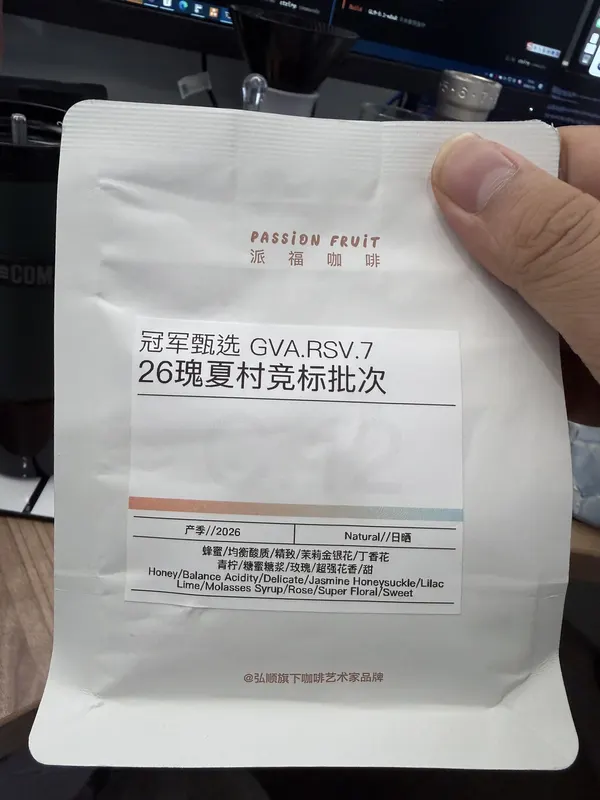豆单 0385 g26瑰夏村竞标 GVA.RSV.7派福咖啡 · 日晒蜂蜜 · 均衡酸质 · 茉莉金银花 · 丁香花豆子详情品种瑰夏烘焙日2026-10-26标签风味蜂蜜、均衡酸质、茉莉金银花、丁香花、青柠、糖蜜糖浆、玫瑰照片 1
豆单 0460 gCosta Rica COE#9 Finca Cola Roja GeishaFIORO COFFEE · Experimental白花 · 莓果 · 蜂蜜 · 水果茶豆子详情产地哥斯达黎加品种Geisha烘焙日2026-09-26标签风味白花、莓果、蜂蜜、水果茶照片 1
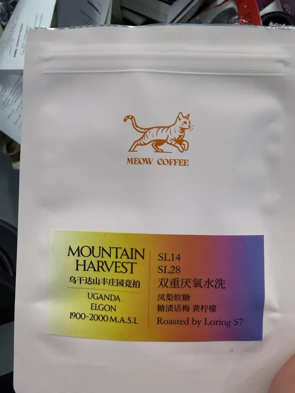豆单 0530 g乌干达山丰庄园竞拍 SL14 / SL28MEOW COFFEE · 双重厌氧水洗凤梨软糖 · 糖渍话梅 · 黄柠檬豆子详情产地乌干达 / Elgon品种SL14 / SL28标签风味凤梨软糖、糖渍话梅、黄柠檬照片 1
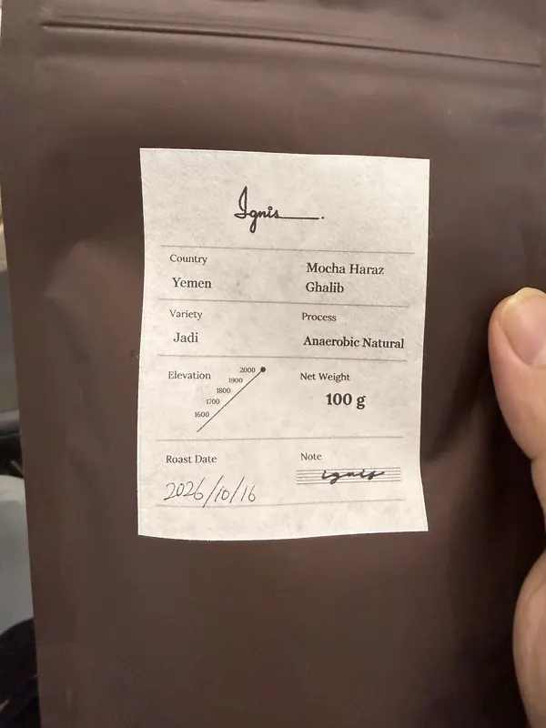豆单 0640 g也门 Mocha Haraz Ghalib JadiIgnis · 厌氧日晒豆子详情产地也门 / Mocha Haraz Ghalib品种Jadi烘焙日2026-10-16照片 1
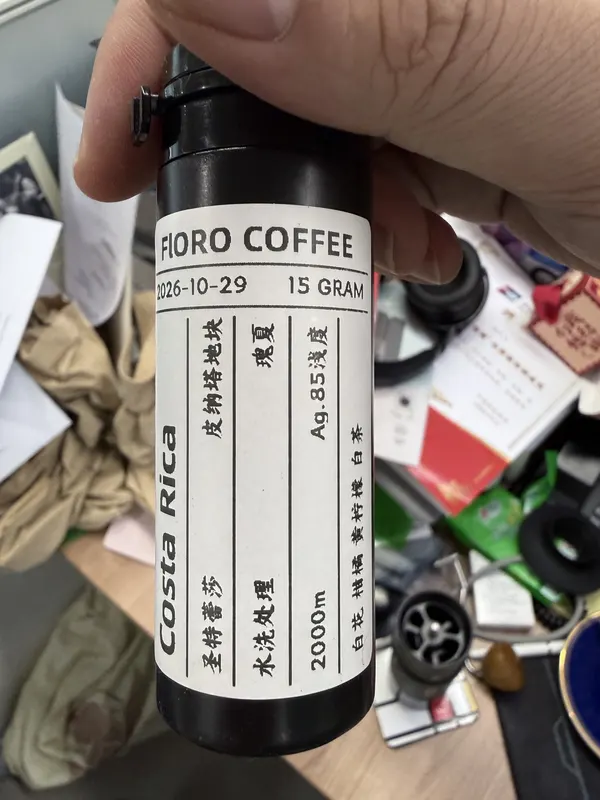豆单 0815 g哥斯达黎加圣特蕾莎 皮纳塔地块瑰夏FIORO COFFEE · 水洗白花 · 柑橘 · 橙柠檬 · 白茶豆子详情产地哥斯达黎加 / 圣特蕾莎 / 皮纳塔地块品种瑰夏烘焙日2026-10-29标签风味白花、柑橘、橙柠檬、白茶照片 1
豆单 0915 gEthiopia ALO Shetane Station 74158 miniFIORO COFFEE · 日晒茉莉花 · 杏桃 · 柠檬茶 · 柑橘豆子详情产地埃塞俄比亚 / ALO / Shetane Station品种74158 mini烘焙日2026-10-29标签风味茉莉花、杏桃、柠檬茶、柑橘照片 1
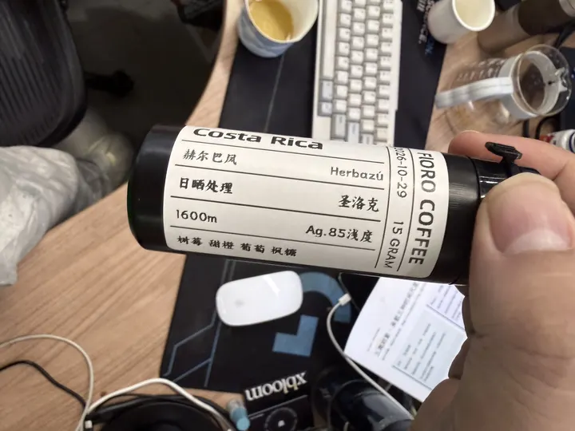豆单 1015 g哥斯达黎加赫尔巴风 Herbazú 圣洛克FIORO COFFEE · 日晒树莓 · 甜橙 · 葡萄 · 枫糖豆子详情产地哥斯达黎加 / Herbazú品种圣洛克烘焙日2026-10-29标签风味树莓、甜橙、葡萄、枫糖照片 1
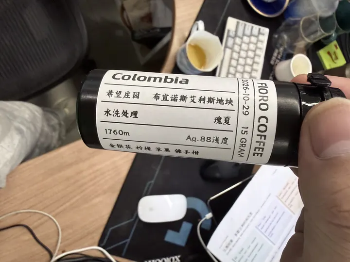豆单 1115 g哥伦比亚希望庄园 布宜诺斯艾利斯地块瑰夏FIORO COFFEE · 水洗金银花 · 柠檬 · 苹果 · 佛手柑豆子详情产地哥伦比亚 / 希望庄园 / 布宜诺斯艾利斯地块品种瑰夏烘焙日2026-10-29标签风味金银花、柠檬、苹果、佛手柑照片 1
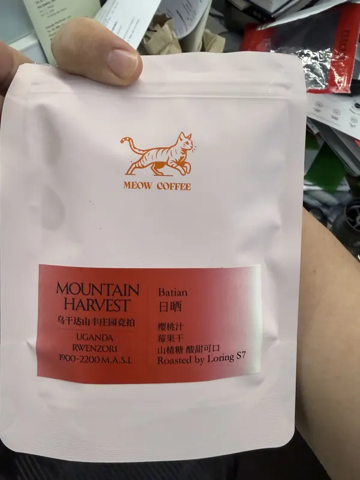豆单 1245 g乌干达山丰庄园竞拍 BatianMEOW COFFEE · 日晒樱桃汁 · 莓果干 · 山楂糖豆子详情产地乌干达 / Rwenzori品种Batian标签风味樱桃汁、莓果干、山楂糖照片 1
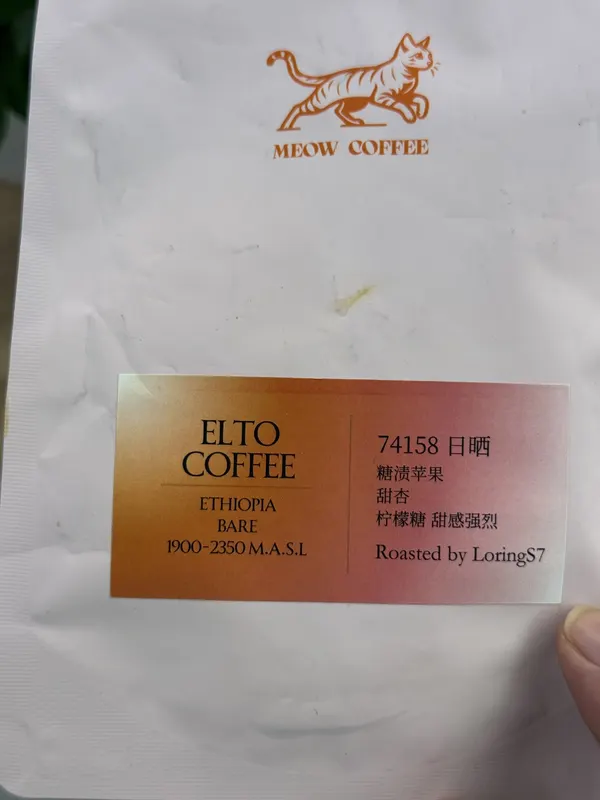豆单 1315 gELTO COFFEE Bare 74158MEOW COFFEE · 日晒糖渍苹果 · 甜杏 · 柠檬糖豆子详情产地埃塞俄比亚 / Bare品种74158烘焙日2026-08-05标签风味糖渍苹果、甜杏、柠檬糖照片 1
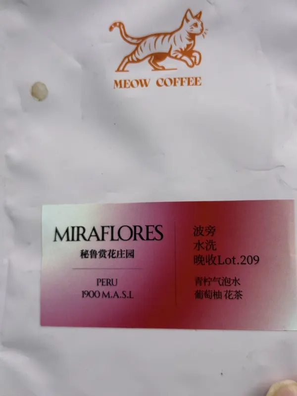豆单 1430 g秘鲁赏花庄园 Miraflores 波旁 Lot.209MEOW COFFEE · 水洗青柠气泡水 · 葡萄柚 · 花茶豆子详情产地秘鲁 / Miraflores品种波旁烘焙日2026-08-05标签风味青柠气泡水、葡萄柚、花茶照片 1
豆单 1530 g埃塞 Yaye-Testi 处理站 74158MEOW COFFEE · 马森秋水洗茉莉花 · 覆盆子 · 杏桃 · 橘子糖豆子详情产地埃塞俄比亚 / Arbegona品种74158烘焙日2026-08-05标签风味茉莉花、覆盆子、杏桃、橘子糖照片 1
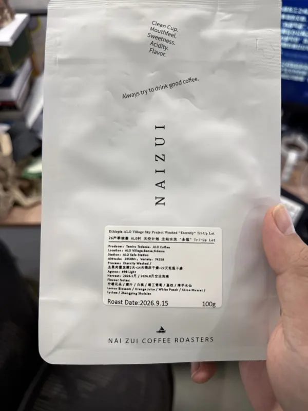豆单 16已喝完ALO村天空计划 Eternity Tri-Up LotNAI ZUI COFFEE ROASTERS · Eternity Washed柠檬花朵 · 橙汁 · 白桃 · 晴王葡萄豆子详情产地埃塞俄比亚 / ALO Village, Bensa, Sidama品种74158烘焙日2026-09-15标签风味柠檬花朵、橙汁、白桃、晴王葡萄、荔枝、漳平水仙照片 1
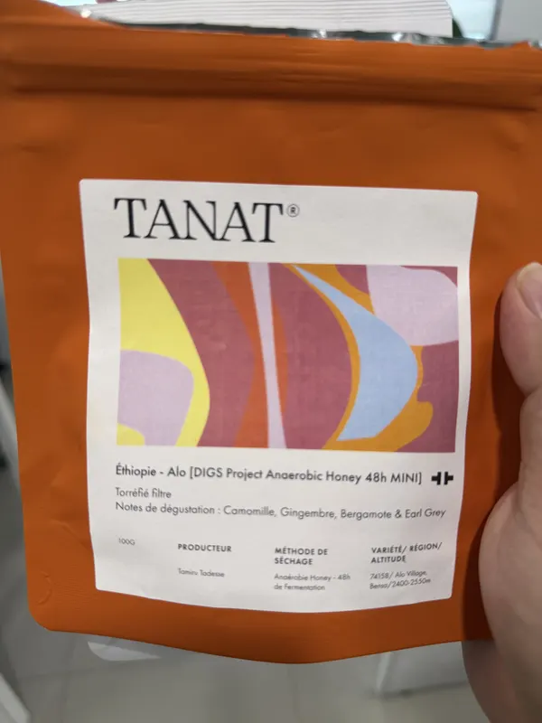豆单 1740 gÉthiopie Alo DIGS Project Anaerobic Honey 48h MINITANAT · 48h厌氧蜜处理洋甘菊 · 生姜 · 佛手柑 · 伯爵茶豆子详情产地埃塞俄比亚 / Alo Village, Bensa品种74158烘焙日2026-10-26标签风味洋甘菊、生姜、佛手柑、伯爵茶照片 1
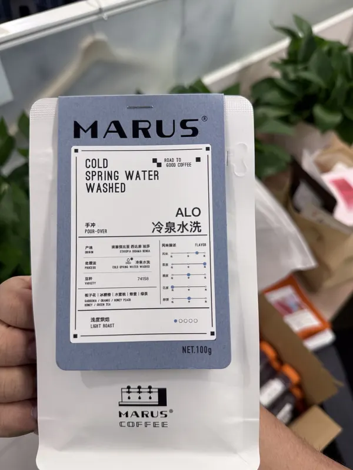豆单 18100 gALO 冷泉水洗 74158MARUS · 冷泉水洗栀子花 · 冰糖橙 · 水蜜桃 · 蜂蜜豆子详情产地埃塞俄比亚 / 西达摩 / 班莎品种74158标签风味栀子花、冰糖橙、水蜜桃、蜂蜜、绿茶照片 1
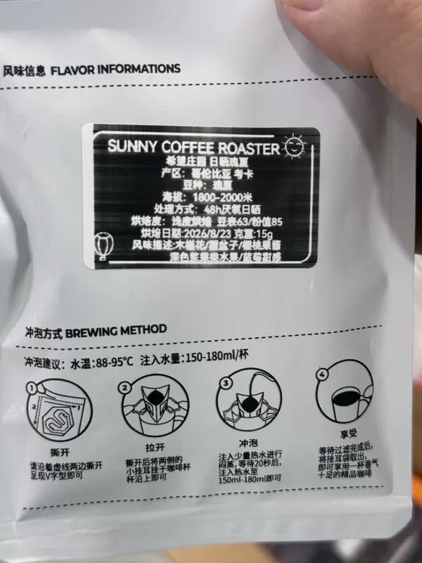豆单 1915 g希望庄园日晒瑰夏SUNNY COFFEE ROASTER · 48h厌氧日晒木兰花 · 橙子 · 橙皮果酱 · 浅色花果豆子详情产地哥伦比亚 / 考卡品种瑰夏烘焙日2026-08-23标签风味木兰花、橙子、橙皮果酱、浅色花果、水果、葡萄甜感照片 1
豆单 2130 gLa Aldea 橙波旁LEICHT · 共发酵厌氧水洗（Co-Fermented Anaerobic Washed）花香 · 天惠香 · 橙子 · 柚子豆子详情产地哥伦比亚 / 慧兰省圣奥古斯丁品种橙波旁（Orange Bourbon）烘焙日2026-09-14标签风味花香、天惠香、橙子、柚子、香料、黄糖照片 1 照片 2 照片 3
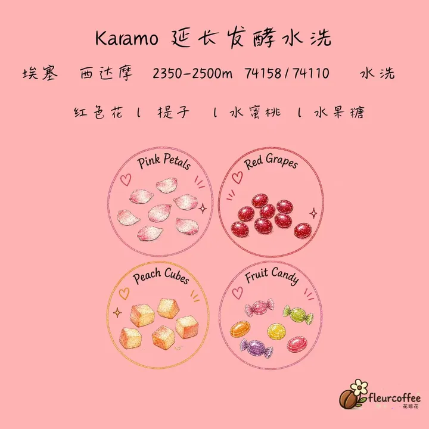豆单 2230 gKaramo 延长发酵水洗延长发酵水洗红色花 · 提子 · 水蜜桃 · 水果糖豆子详情产地埃塞俄比亚 / 西达摩品种74158 / 74110标签风味红色花、提子、水蜜桃、水果糖照片 1 照片 2 照片 3
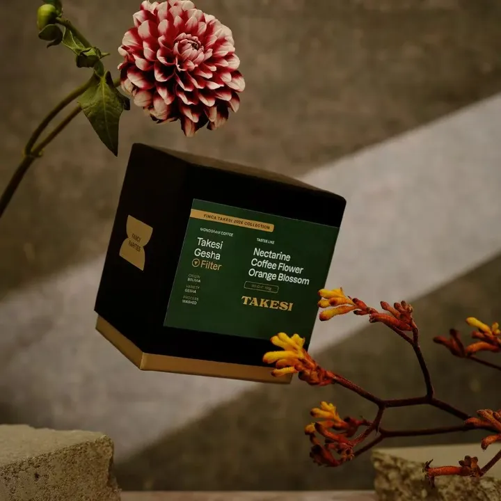豆单 2330 g玻利维亚 Takesi 水洗瑰夏Monogram Coffee · 水洗油桃 · 咖啡花 · 橙花豆子详情产地玻利维亚 / 安第斯山脉 / Finca Takesi品种瑰夏（Gesha）标签风味油桃、咖啡花、橙花照片 1 照片 2 照片 3
豆单 2430 gHytte 危地马拉茵赫特全水洗瑰夏（普通批次）Hytte Roastery · 全水洗（Fully Washed）伯爵茶 · 蜜桃 · 柠檬皮 · 绿茶豆子详情产地危地马拉 / 韦韦特南戈（Huehuetenango）/ 茵赫特庄园（El Injerto）品种瑰夏（Geisha）标签风味伯爵茶、蜜桃、柠檬皮、绿茶照片 1 照片 2
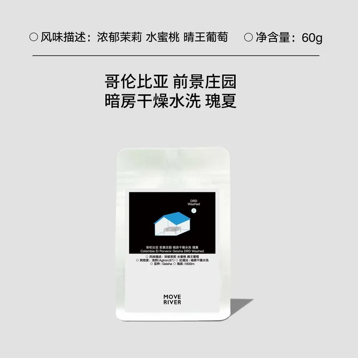豆单 2530 g前景庄园 Dr.D 暗房干燥水洗瑰夏MOVE RIVER · 暗房干燥水洗（DRD Washed）浓郁茉莉 · 水蜜桃 · 晴王葡萄豆子详情产地哥伦比亚 / 前景庄园（El Porvenir）品种瑰夏（Geisha）标签风味浓郁茉莉、水蜜桃、晴王葡萄照片 1 照片 2 照片 3
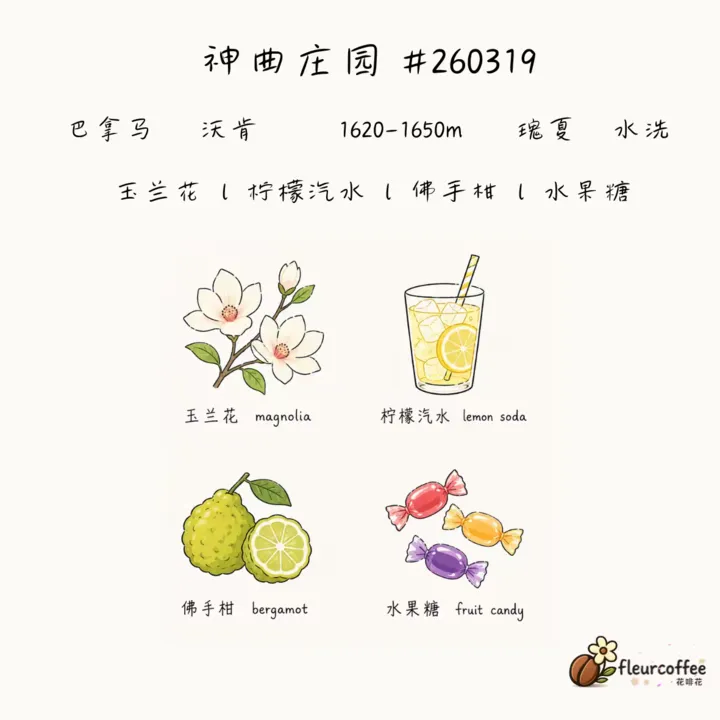豆单 2615 g神曲庄园 #260319 水洗瑰夏水洗玉兰花 · 柠檬汽水 · 佛手柑 · 水果糖豆子详情产地巴拿马 / 沃肯 / 神曲庄园品种瑰夏标签风味玉兰花、柠檬汽水、佛手柑、水果糖照片 1 照片 2
豆单 2730 g瑰夏村金标 #144日晒玉兰花 · 桃子汁 · 甜橙 · 葡萄柚豆子详情产地埃塞俄比亚 / 瑰夏村 / OMA 地块品种瑰夏1931标签风味玉兰花、桃子汁、甜橙、葡萄柚照片 1 照片 2 照片 3
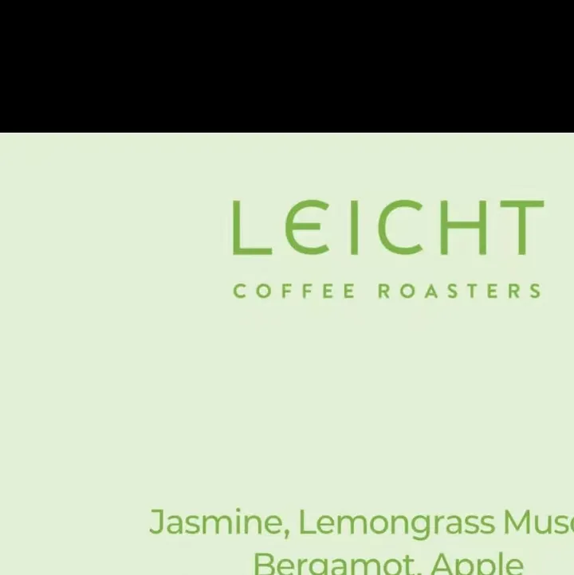豆单 2815 g韩国天空计划｜LEICHT Sky ProjectLEICHT Coffee Roasters · RW 厌氧水洗（RW Anaerobic Washed）Jasmine · Lemongrass Muscat · Bergamot · Apple豆子详情产地埃塞俄比亚 / Alo品种74158标签风味Jasmine、Lemongrass Muscat、Bergamot、Apple照片 1 照片 2
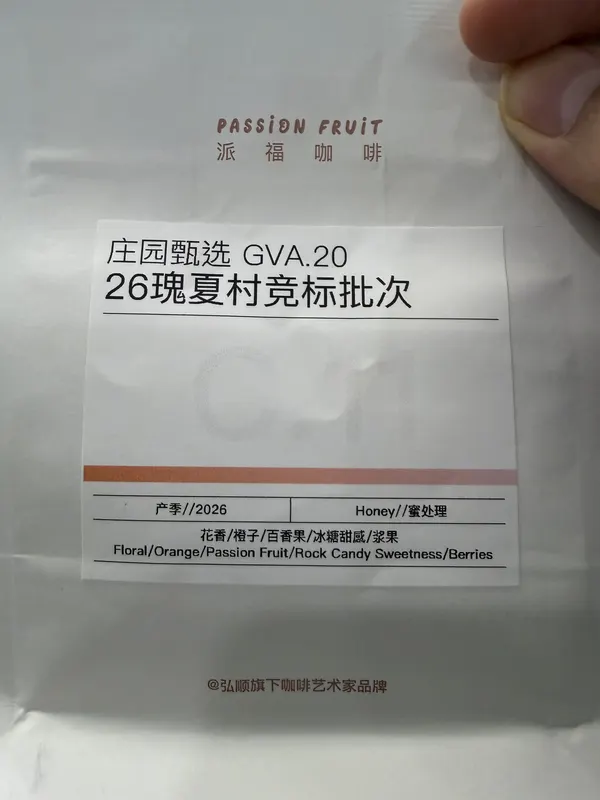豆单 3070 g26瑰夏村竞标 庄园甄选 GVA.20派福咖啡 · 蜜处理花香 · 橙子 · 百香果 · 冰糖甜感豆子详情烘焙日2026-10-26标签风味花香、橙子、百香果、冰糖甜感、浆果照片 1